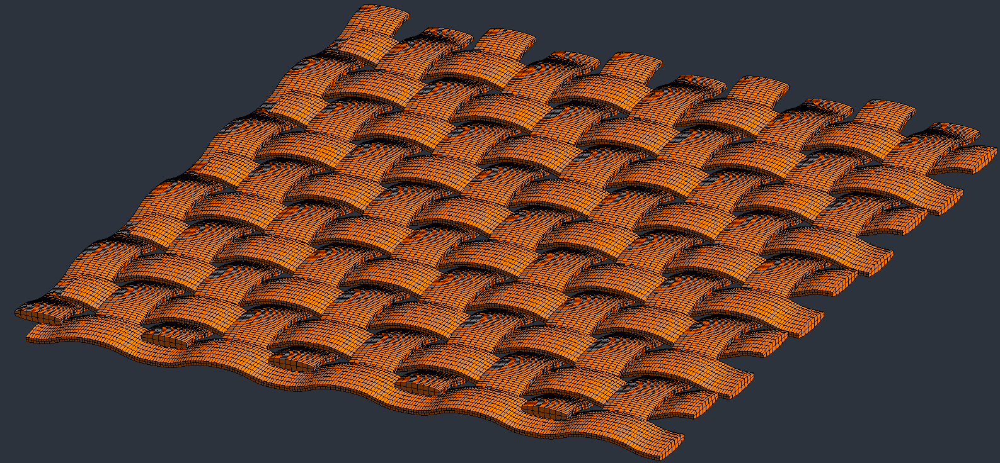

2D woven composite mesh
Codes
Python / Gmsh
Project
PhD mentoring
Details
Due to the limited availability of flexible tools, a custom Python code
has been developed to generate 2D woven composites. This tool provides extensive versatility,
allowing users to define almost everything.
This work is part of a PhD research project that investigates the behavior of 2D woven composites under impact.